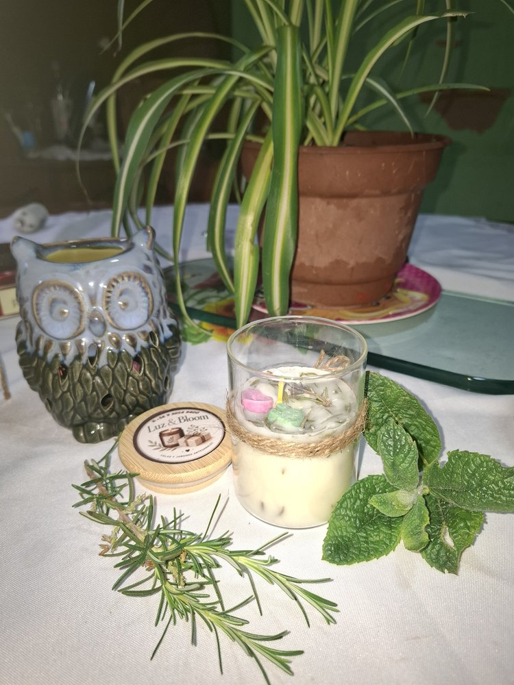
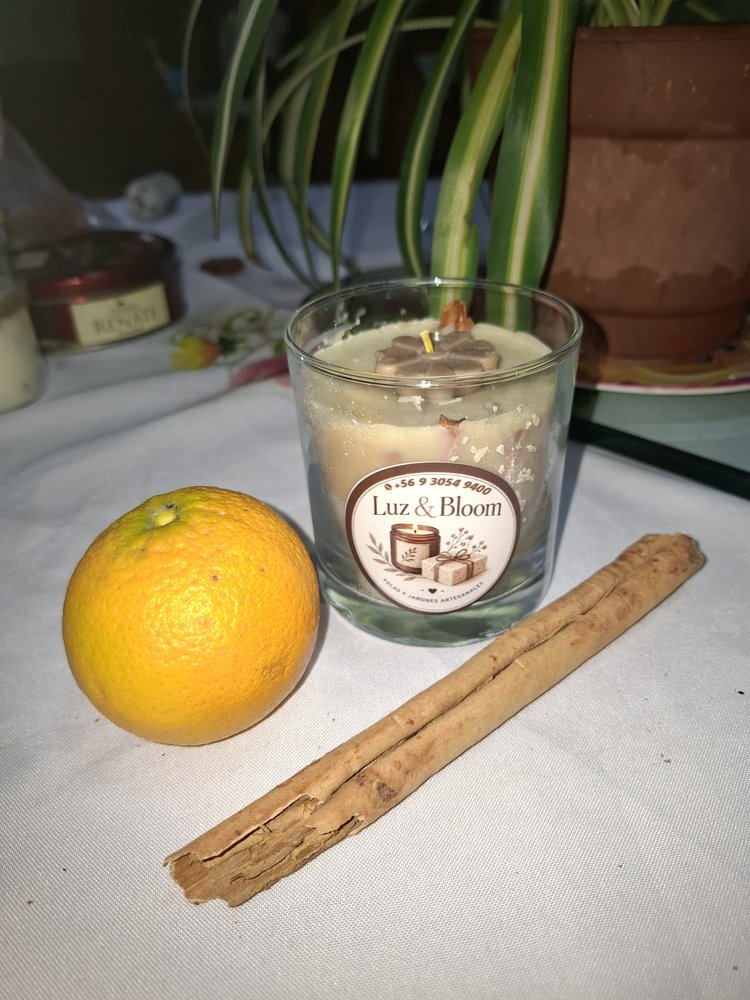
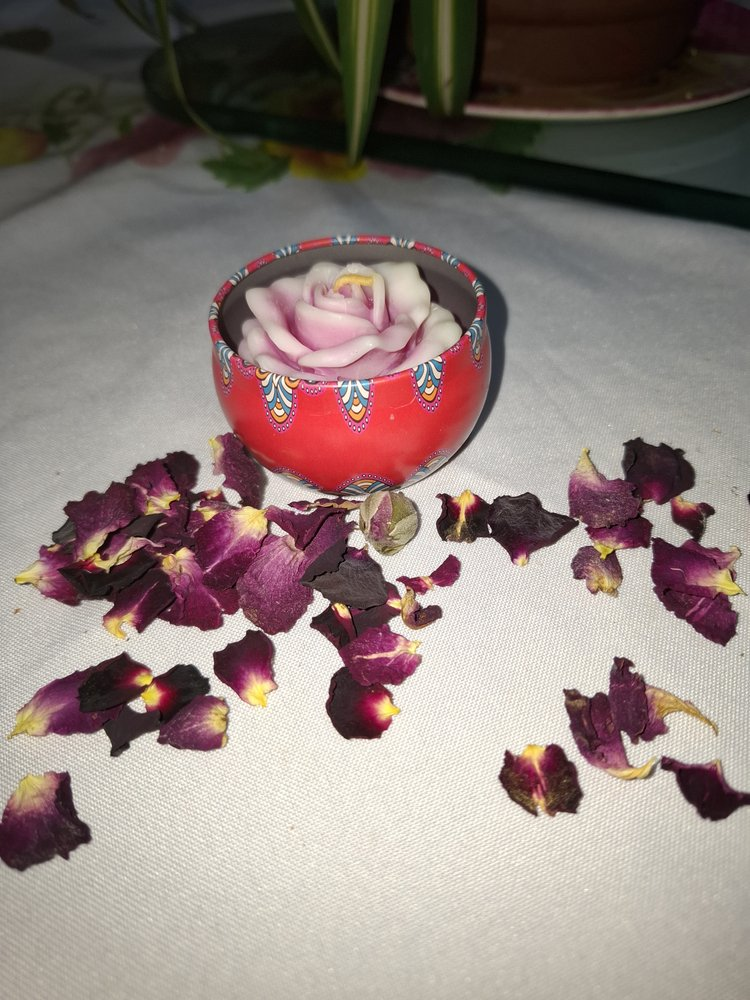
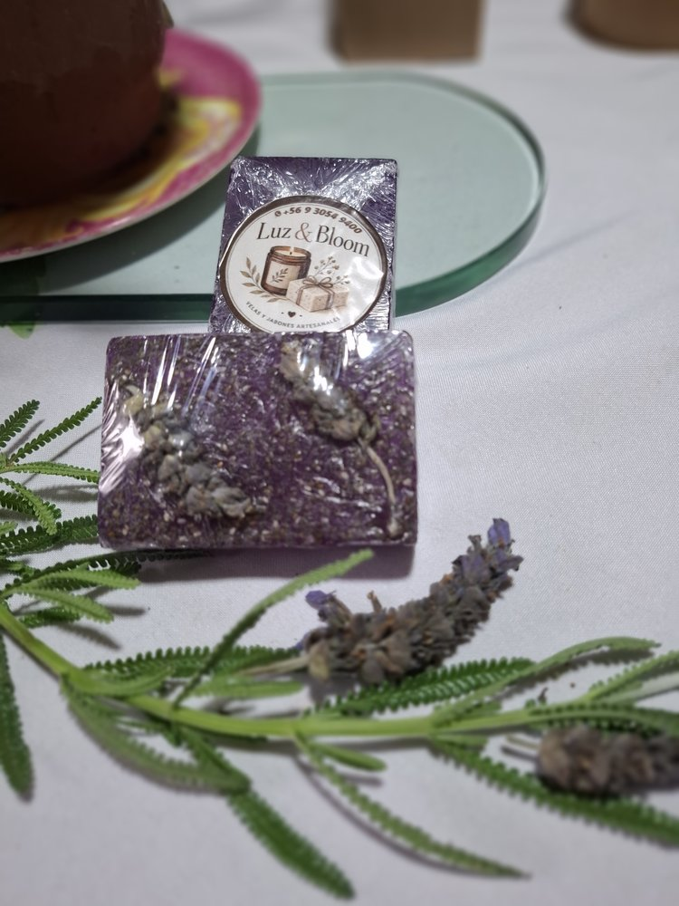
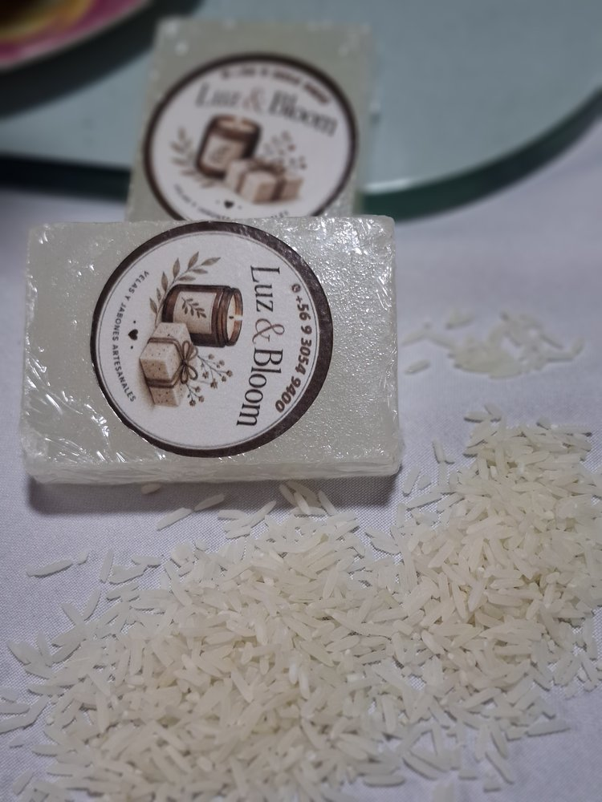
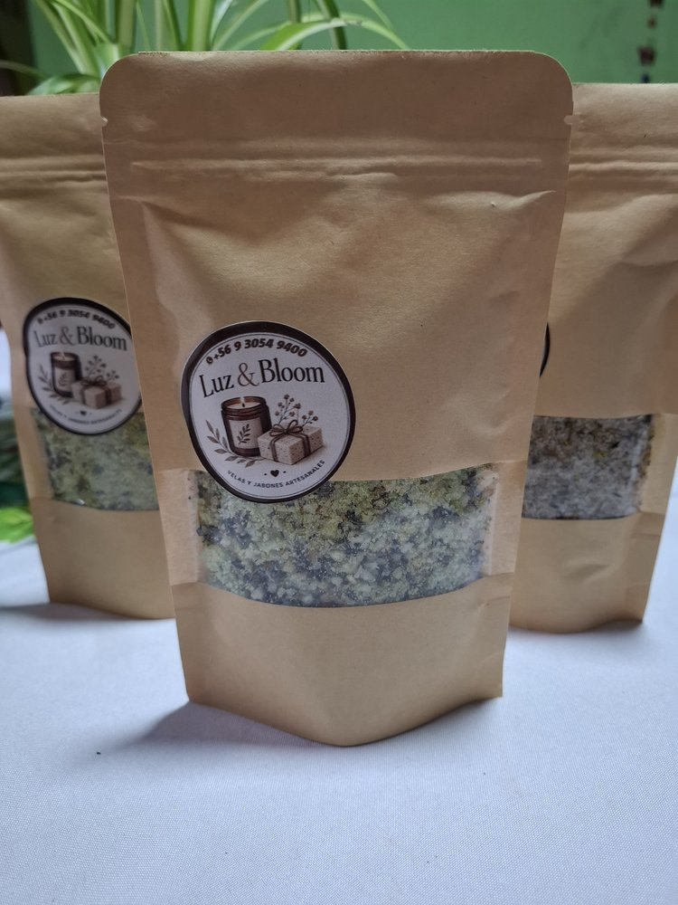

Vela Botánica de Menta y Romero
Vela artesanal en frasco de vidrio con tapa de madera, aromatizada con hierbas frescas para una sensación refrescante, despejada y relajante.

Velas, jabones y sales de baño para momentos de desconexión, calma y aromaterapia sensorial
Mostrando 10 productos disponibles.
Elaboradas a mano con ceras e ingredientes de origen natural, flores botánicas y envases pensados para su reutilización.
Vela artesanal en frasco de vidrio con tapa de madera, aromatizada con hierbas frescas para una sensación refrescante, despejada y relajante.

Combinación cálida y energizante de cítricos y canela natural en vaso de vidrio reutilizable.

Velas decoradas artesanalmente con diseño de rosas y pétalos naturales, ideales para armonizar espacios.


Presentaciones en latas decorativas, cuencos de cerámica pintados a mano y diseños florales multicolores (incluye lavanda).
Figuras y corazones de cera aromática para derretir en hornillos, liberando fragancias naturales en el hogar.
Jabones elaborados a mano con extractos botánicos, aceites vegetales, miel y especias naturales para el cuidado diario de la piel.
Ideal para calmar la piel y disfrutar de un baño relajante antes del descanso.

Fórmula suave elaborada artesanalmente para limpiar y suavizar todo tipo de piel.

Combina la suavidad nutritiva de la miel con la delicada sensación reconfortante de la flor de caléndula.

Jabones exfoliantes, energizantes y de masaje elaborados con grano de café y clavo de olor.
Mezclas minerales con flores deshidratadas, hierbas botánicas y aceites aromáticos en envases ecológicos.
Ideales para baños de inmersión o pediluvios que alivian tensiones y renuevan la energía.


Nuestras velas, jabones y sales de baño destacan por los aromas y sensaciones de bienestar que brindan sus hierbas, flores e ingredientes naturales seleccionados:
¿Deseas encargar algún producto o consultar por aromas disponibles? Ir al formulario de contacto y pedidos.